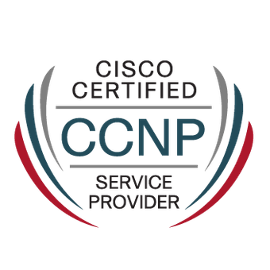
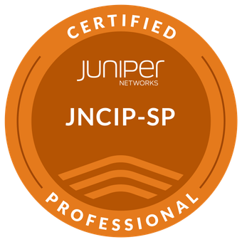
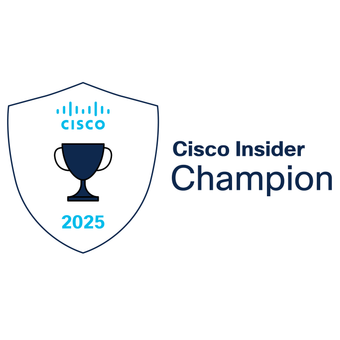
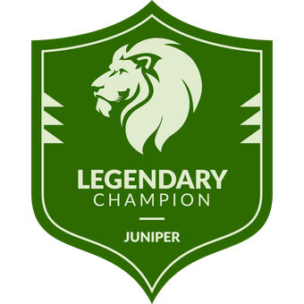

¡Step into my World! I am Daniel Fonque
As a Senior Network and Security Engineer, I am passionate about building reliable, scalable, and secure technology environments.
I have a strong background in networking, security, Service Provider technologies, cloud connectivity, and infrastructure design. My work focuses on understanding how systems operate end to end, from routing architecture and security policies to automation and operational reliability.
I am continuously expanding my knowledge in IP/MPLS, Segment Routing, SD-WAN, cloud networking, APIs, automation, and AI-assisted engineering.
I consider myself a lifelong learner and technology enthusiast, always focused on improving, building, and understanding how things work under the hood.
This website is my technical notebook, lab archive, and personal space to document how I learn, break, rebuild, and understand networks.
Credentials & Recognition

JNCIP-SP

Cisco Champion 2025
